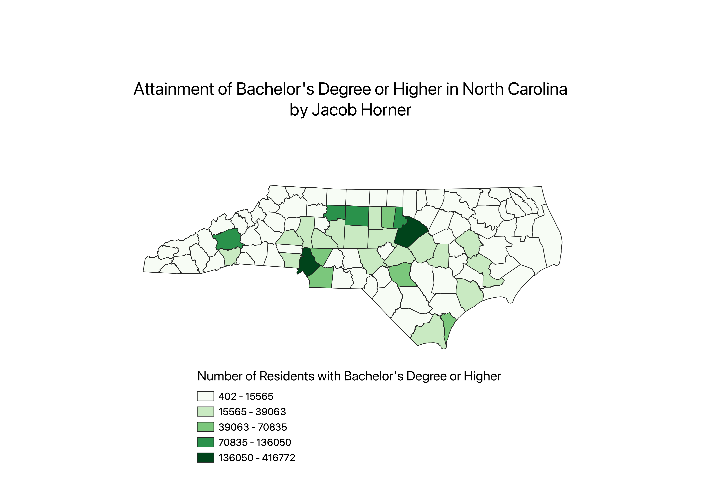

Homework 6: Census data choropleth
Jacob Horner
This map depicts the number of people who have attained a bachelor's degree or higher in each county in North Carolina.
Lighter green represents a smaller group that has attained a bachelor's degree or higher,
whereas darker green corresponds to a larger group that has attained a bachelor's degree or higher. Higher attainment corresponds with counties with urban hubs.
Buncombe County (Asheville), Mecklenburg County (Charlotte), and Watauga County (Raleigh) all have very high populations that have recieved a bachelor's degree or higher.
Additionally, the central region of the state contains the majority of people that have attained a bachelor's degree or higher.

Data used for this project
CSV dataset
Link to shapefile